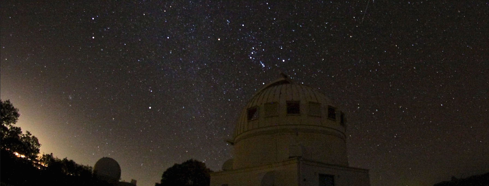

Outreach and Public Education
At ASU, I was heavily involved with a number of outreach and education programs. I served as a mentor and professional development co-chair in the ASU Sundial Project, a program which fosters mentorship opportunities in the physical sciences for diverse undergraduate communities.
For the monthly Earth and Space Open House at ASU, a free public outreach event organized by graduate students in the School of Earth and Space Exploration, I served as an organizing committee member and telescope manager for the majority of my graduate career.
During my first year of Ph.D. study, I helped start and have since worked extensively with the undergraduate-led ASU AstroDevils Astronomy Club, which conducts public outreach and stargazing events across the metro Phoenix area and beyond.
